Return đơn Dropship Part (chưa nhập kho DLR & DLR Stock)
DMS <=> ERP D365 F&O – ERP tạo SO Return, DMS tạo SO Return, hoàn tất khi post invoice / hủy Shipment gốc hoặc xuất kho qua DO khi DLR đã nhập kho
| Ticket | 5994 – Quy trình return SO Dropship của Part |
|---|---|
| Môi trường | Partial (Sandbox). Luồng Non-Stock: chạy lại toàn bộ ngày 11/11/2026. Luồng DLR Stock: test ngày 30/10 và 02/11/2026. |
| Đối tượng | Purchase Order (loại Dropship), Sales Order (Record Type Part Sales Order và SO Dropship Return), Delivery Order (DO Return Dropship), Shipment (Dealer), Inventory Transaction (Goods Receipt, Goods Issue), D365FO Hook |
| Trường hợp | 1. Return khi Đại lý chưa nhập kho xong (Non-Stock): Shipment của Đại lý chưa Completed, hệ thống tự hủy Shipment gốc và Return DO.2. Return khi Đại lý đã nhập kho (DLR Stock): tạo DO từ SO Return, Pick, Pack, Goods Issue, trừ tồn kho Đại lý và tạo SO bán bù. |
| Tài liệu liên quan | Đặc tả kỹ thuật: 5994 - Quy trình return SO Dropship của Part.md; test case: IVC_5994_TC_DLR Non Stock_v1.csv (Non-Stock) và IVC_5994_TC_v1.csv (DLR Stock) |
1. Luồng DLR Non-Stock (Đại lý chưa nhập kho)
Bảng đối chiếu bước DMS và ERP theo test case (IVC_5994_TC_DLR Non Stock_v1.csv)
Mỗi test case trong file CSV được tách thành các bước thực hiện trên DMS và trên ERP. (thật) là hook DMS → ERP chạy thật; (giả lập) là webhook ERP → DMS tạo theo mẫu hook cũ (lần chạy 11/11/2026, Partial). Link hook trỏ tới bản ghi D365FO_Hook trên Partial.
| DMS | ERP |
|---|---|
| TC-001-01 Tạo PO – DLRs tự tạo PO trên DMS (chỉ 1 vendor) | |
| Không có thao tác trên ERP |
| TC-001-02 Tạo PO – DLRs tự tạo PO trên DMS lớn hơn 1 vendor (2 vendor) | |
| Không có thao tác trên ERP |
| TC-002-01 Tạo SO – Hệ thống tạo SO trên DMS chỉ 1 vendor | |
| Không có thao tác trên ERP |
| TC-002-02 Tạo SO – Hệ thống tạo SO trên DMS lớn hơn 1 vendor (2 vendor) | |
| Không có thao tác trên ERP |
| TC-003-01 Tạo SO – Tự động tạo SO dropship lên ERP (1 vendor) | |
|
|
| TC-003-02 Tạo SO – Tự động tạo SO dropship lên ERP (2 vendor) | |
Mỗi SO Open sinh một hook CreateSO gửi ERP, nhận một hook Sync_ResultSO cho mỗi SO. Chưa chạy 11/11/2026. | Tạo 2 SO Dropship trên ERP và trả SalesId cho từng SO. |
| TC-004 Post invoice Journal SO – Post thủ công 1 SO trên ERP | |
| Không có thao tác trên DMS (kết quả xem ở TC-005). |
|
| TC-005 Tạo SM – Tự động tạo SM khi hoàn tất Post Invoice Journal SO trên ERP | |
|
|
| TC-006 Tạo SO Return trên ERP – ERP thực hiện tạo manual 1 SO Return | |
| Không có thao tác trên DMS. |
|
| TC-007 Tạo SO Return trên DMS – Tự động đồng bộ SO Return từ ERP xuống DMS | |
|
|
| TC-008 Post Delivery, tạo Packing Slip Journal và Post Invoice Journal (SO Return) | |
|
|
| TC-009 Tạo DO – DMS tự động sinh DO khi Post Packing Slips trên ERP | |
| Không có thao tác trên ERP |
| TC-010 Cancel SM và DO – Tự động Cancel SM gốc & DO khi SO Return nhận tín hiệu post invoice của đơn Return | |
|
|
| TC-011 Completed SO Return – Tự động Completed SO Return khi Post Invoice Journal trên ERP | |
| Hoàn tất Post Invoice Journal của SO Return (giả lập). |
| TC-012 Tạo SO bán bù – Tạo SO bán bù từ item của DLR SO Return đã Complete | |
|
|
TC-001-01 – Tạo PO: DLRs tự tạo PO trên DMS (chỉ 1 vendor)
Đường dẫn: Home → App Launcher → DLR → Purchase Orders
Kết quả mong đợi: PO được tạo thành công, chứa sản phẩm của một vendor và chuyển sang trạng thái đã phê duyệt.
Chạy lại 11/11/2026: Đạt PO PSPO0001592 (4 sản phẩm, NCC ISUZU VIETNAM) đã Approved. NCC có MOQ nên phải đủ MOQ mới gửi duyệt được.
- Tạo PO với Record Type = DLR Purchase Order, Dealer Tây Bắc Sài Gòn.
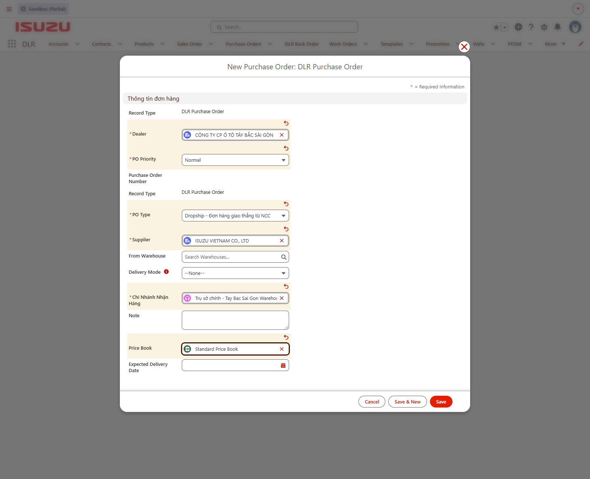
Hình 1 – TC-001-01: form tạo PO Dropship. - Chọn Priority = Normal, PO Type = Dropship.
- Thêm các sản phẩm thuộc cùng một vendor (8025030032, 8025030033, 8025030035, 8025030038).
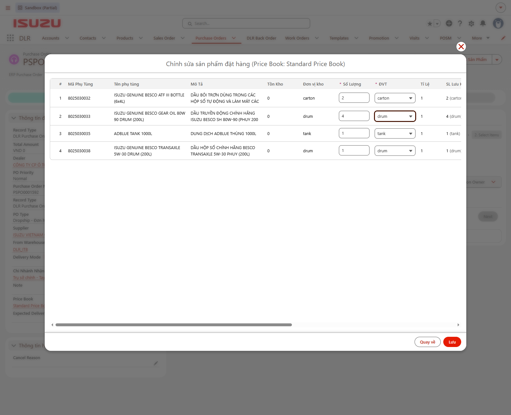
Hình 2 – TC-001-01: chọn sản phẩm và số lượng. 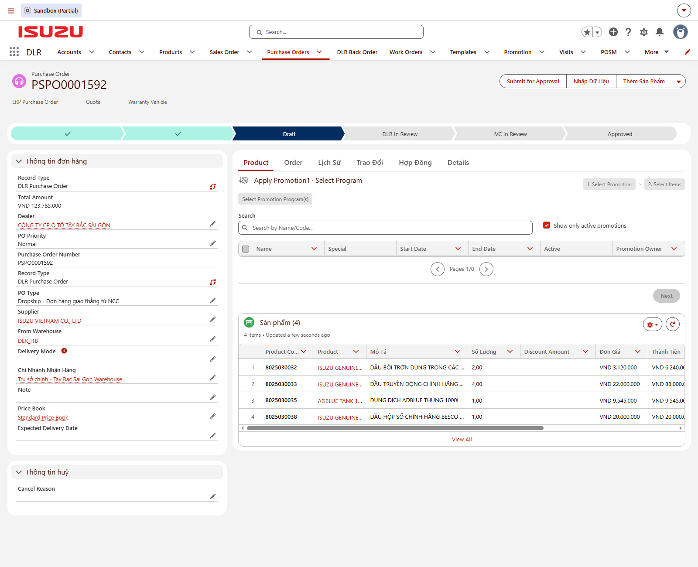
Hình 3 – TC-001-01: PO Draft có 4 dòng sản phẩm. - Chọn Submit for Approval và thực hiện Approve.
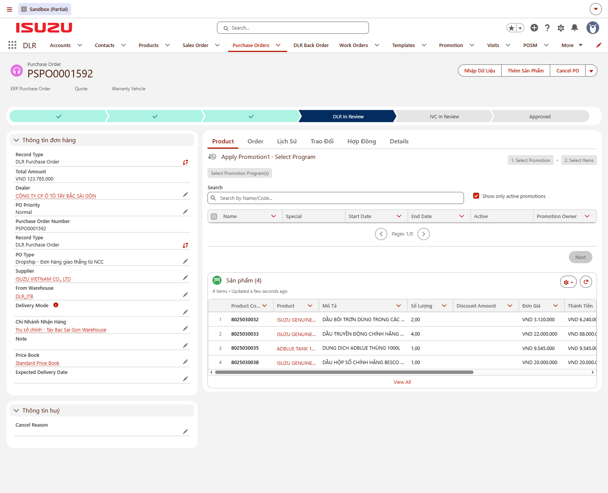
Hình 4 – TC-001-01: sau Submit for Approval. 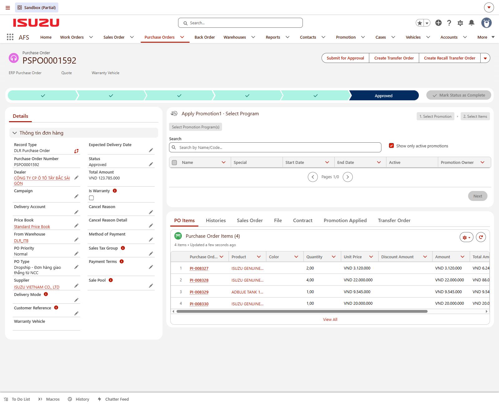
Hình 5 – TC-001-01: PO Approved.
TC-001-02 – Tạo PO: DLRs tự tạo PO trên DMS lớn hơn 1 vendor (2 vendor)
Đường dẫn: Home → App Launcher → DLR → Purchase Orders
Kết quả mong đợi: PO được tạo thành công và ghi nhận sản phẩm thuộc hai vendor. PO được chuyển sang trạng thái đã phê duyệt.
Chạy lại 11/11/2026: Chưa chạy
- Tạo PO với Record Type = DLR Purchase Order.
- Chọn Priority = Normal, PO Type = Dropship.
- Thêm sản phẩm thuộc hai vendor khác nhau.
- Chọn Submit for Approval và thực hiện Approve.
TC-002-01 – Tạo SO: hệ thống tạo SO trên DMS chỉ 1 vendor
Đường dẫn: Home → App Launcher → AFS → Sales Order
Kết quả mong đợi: SO 1 Vendor.
Chạy lại 11/11/2026: Đạt SO ARSO0005713 tự tạo, 4 dòng đúng như PO, đã chuyển Open.
- Mở PO một vendor đã được phê duyệt.
- Kiểm tra Sales Order được tạo trên DMS (Record Type DLR Part Sales Order, Loại SO Dropship, tham chiếu PO).
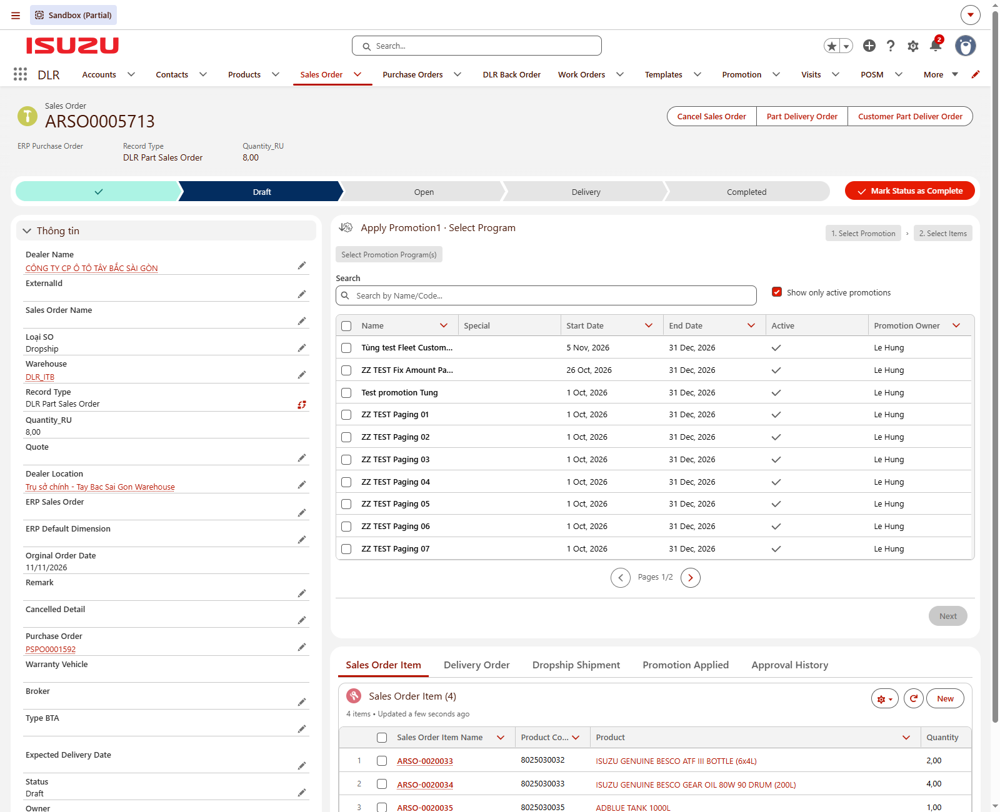
Hình 6 – TC-002-01: SO Draft do hệ thống tự tạo sau khi PO Approved. - Kiểm tra thông tin liên kết với PO, vendor và sản phẩm.
- Gắn hoặc kiểm tra ERP Default Dimension (SPP-AFS---SPP--02, bắt buộc trước khi Open).
- Chuyển SO sang trạng thái Open.
TC-002-02 – Tạo SO: hệ thống tạo SO trên DMS lớn hơn 1 vendor (2 vendor)
Đường dẫn: Home → App Launcher → AFS → Sales Order
Kết quả mong đợi: SO 2 Vendor.
Chạy lại 11/11/2026: Chưa chạy
- Mở PO có hai vendor đã được phê duyệt.
- Kiểm tra các SO được hệ thống tạo trên DMS.
- Đối chiếu vendor và sản phẩm của từng SO với PO.
- Gắn hoặc kiểm tra ERP Default Dimension.
- Chuyển các SO sang trạng thái Open.
TC-003-01 – Tạo SO: tự động tạo SO dropship lên ERP (1 vendor)
Đường dẫn: ERP
Kết quả mong đợi: (CSV không ghi) SO Dropship được tạo trên ERP và trả SalesId về DMS.
Chạy lại 11/11/2026: Đạt hook DMS → ERP chạy thật.
- SO Dropship 1 vendor đã Open: DMS tạo hook DH-00198496 (
CreateSO, Message "Successfully inserted data into the temp table. Lines=4"). - ERP tạo SO và trả hook DH-00198497 (
Sync_ResultSO) sau khoảng 20 giây: ERP Sales Order = ARSO0034822.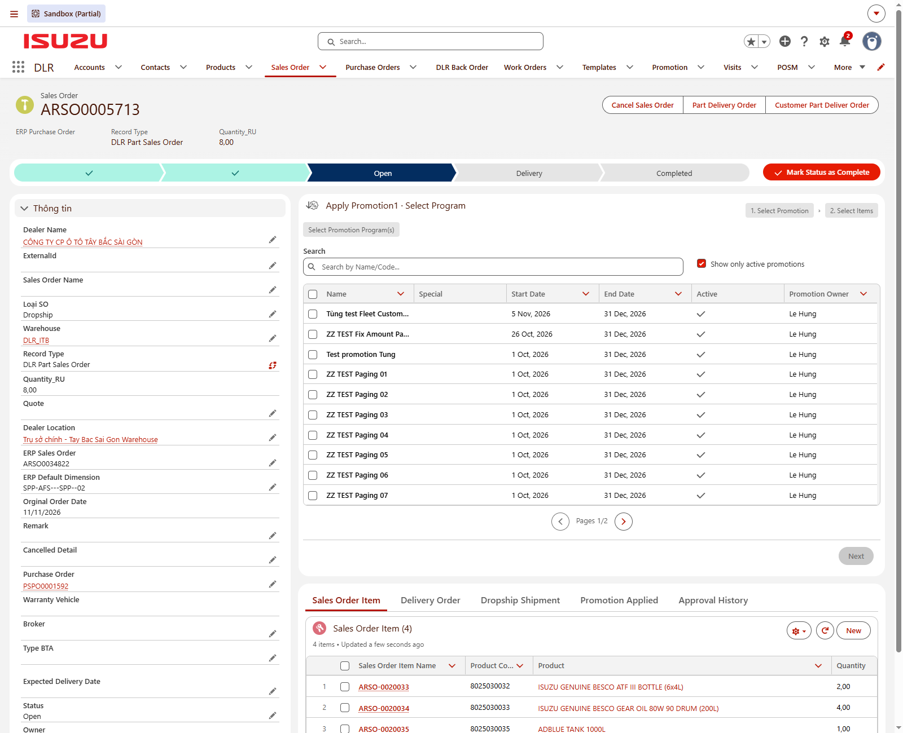
Hình 7 – TC-003-01: SO ARSO0005713 đã Open và có ERP Sales Order ARSO0034822.
TC-003-02 – Tạo SO: tự động tạo SO dropship lên ERP (2 vendor)
Đường dẫn: ERP
Kết quả mong đợi: (CSV không ghi)
Chạy lại 11/11/2026: Chưa chạy
- SO Dropship 2 vendor đã Open: mỗi SO sinh một hook
CreateSOvà nhận một hookSync_ResultSO.
TC-004 – Post invoice Journal SO: post thủ công 1 SO trên ERP
Đường dẫn: ERP
Kết quả mong đợi: Post thủ công 1 SO trên ERP.
Chạy lại 11/11/2026: Bước ERP, giả lập
- SO Dropship đã đồng bộ lên ERP; người dùng ERP post packing slip và Invoice Journal thủ công.
- Giả lập 2 đợt giao: ARPS9900101 (8025030032 x1, 8025030033 x1) và ARPS9900102 (8025030035 x1, 8025030038 x1). Kết quả xem ở TC-005.
TC-005 – Tạo SM: tự động tạo SM khi hoàn tất post Invoice Journal SO trên ERP
Đường dẫn: DMS → App Launcher → DLR → Shipments
Kết quả mong đợi: Shipment liên kết đúng SO, invoice và chứa đúng sản phẩm, số lượng.
Chạy lại 11/11/2026: Đạt mỗi Shipment gắn đúng một hóa đơn: SM-000418 (ARIN9900101), SM-000419 (ARIN9900102).
- Hoàn tất Post Invoice Journal của SO Dropship trên ERP (giả lập).
- Chờ hook về DMS: DH-00198498, DH-00198500 (
8_PostPacking), DH-00198501, DH-00198503 (9_PostInvoice), DH-00198502, DH-00198504 (Sync_InvoiceSOloại DropShip). - Mở SO ARSO0005713, tab Dropship Shipment: có 2 Shipment SM-000418 và SM-000419 (Dropship, Creation, mỗi packing slip một Shipment).
Hình 8 – TC-005: SM-000418 Creation, Invoice INV-ARIN9900101 và ERP Invoice Id ARIN9900101. - Kiểm tra Shipment liên kết đúng SO, invoice, sản phẩm, số lượng. Hóa đơn INV-ARIN9900101 có JournalId = ARIN9900101 (khóa để tìm Shipment gốc khi Return) và chỉ gắn vào Shipment có items khớp dòng hóa đơn.
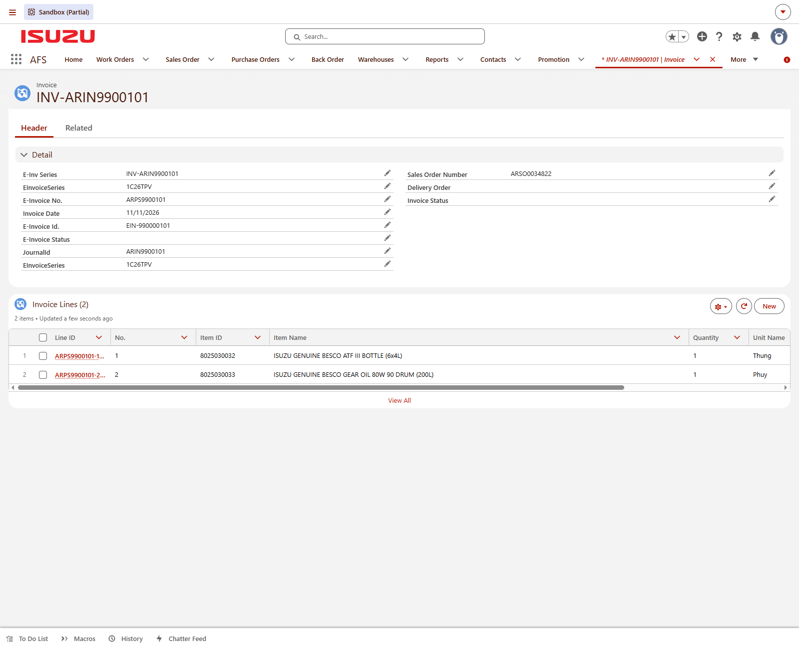
Hình 9 – TC-005: Invoice INV-ARIN9900101, JournalId = ARIN9900101. 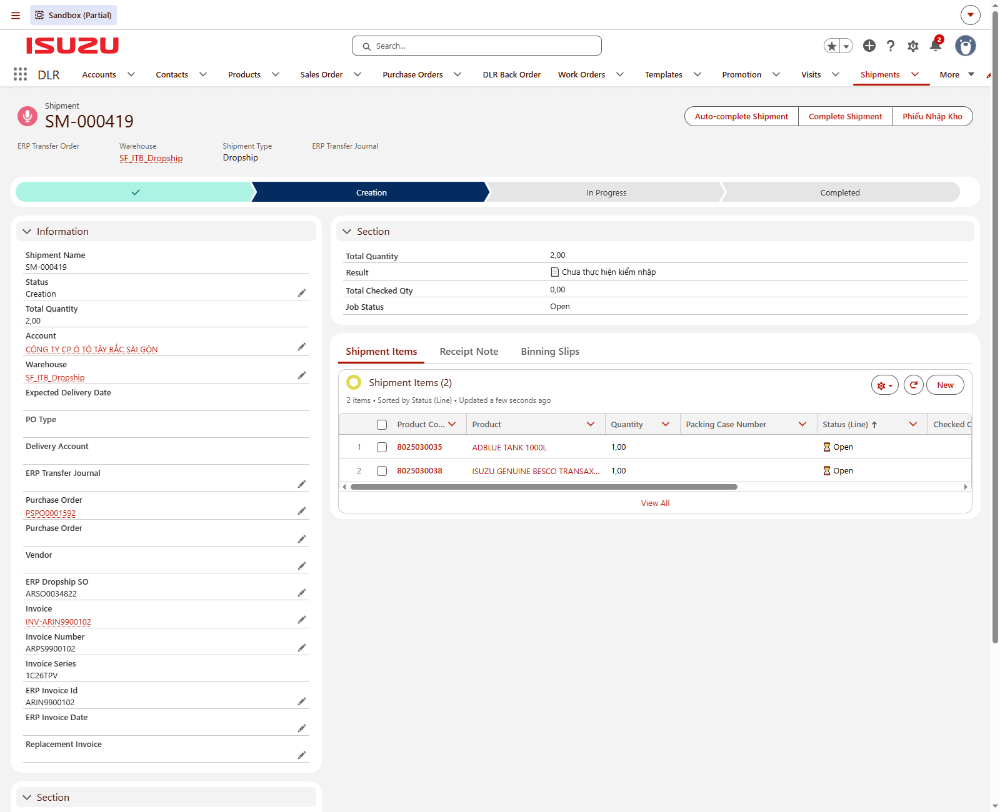
Hình 10 – TC-005: SM-000419 mang hóa đơn ARIN9900102, không bị gắn hóa đơn của SM-000418. - Field ERP Invoice Id (khối Information của Shipment) được ghi khi hook
9_PostInvoicegắn hóa đơn; hookSync_InvoiceSOchỉ ghi vào Shipment đã gắn đúng hóa đơn đó và chưa có mã (Message ví dụ "Skipped: … bỏ qua 1 Shipment đã có mã hóa đơn ERP …").
TC-006 – Tạo SO Return trên ERP: ERP thực hiện tạo manual 1 SO Return
Đường dẫn: ERP
Kết quả mong đợi: (CSV không ghi) SO gốc: ARSO0034782, SO Return: ARSO0034785 (dữ liệu IVC).
Chạy lại 11/11/2026: Bước ERP, giả lập
- SO gốc (ARSO0034822) đã hoàn thành trên ERP.
- Tạo thủ công SO Return tham chiếu SO gốc: giả lập ARSO9900201, trả hóa đơn ARIN9900101 (8025030032 x1, 8025030033 x1).
TC-007 – Tạo SO Return trên DMS: tự động đồng bộ SO Return từ ERP xuống DMS
Đường dẫn: DMS → App Launcher → AFS → Sales Orders
Kết quả mong đợi: SO Return được tạo thành công trên ERP, tham chiếu đúng giao dịch gốc và sẵn sàng đồng bộ về DMS.
Chạy lại 11/11/2026: Đạt SO Return ARSO0005714 do hook DH-00198505 tạo.
- Tạo SO Return trên ERP (TC-006).
- Chờ tiến trình đồng bộ từ ERP về DMS: hook DH-00198505 (
SO_Return) isRun và isSuccess được tích, Message "Success: Created Sales_Order__c …".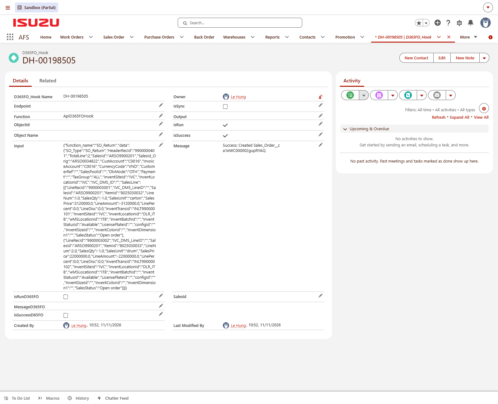
Hình 11 – TC-007: hook SO_Return (DH-00198505) xử lý thành công. - Trên DMS tìm SO Return theo mã ERP (ARSO9900201): Record Type SO Dropship Return, Sales Order Ref trỏ về SO gốc ARSO0005713, kế thừa PO PSPO0001592, Quantity_RU âm (-2).
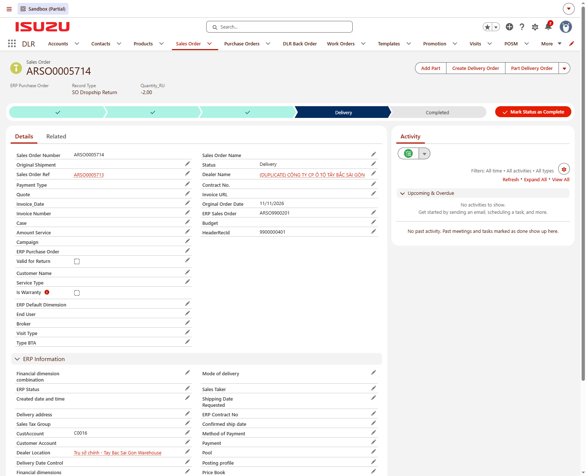
Hình 12 – TC-007: SO Return ARSO0005714, liên kết SO gốc. - Tab Related → Sales Order Item: 2 dòng trả hàng (số lượng âm, đơn giá, sản phẩm theo mã item).
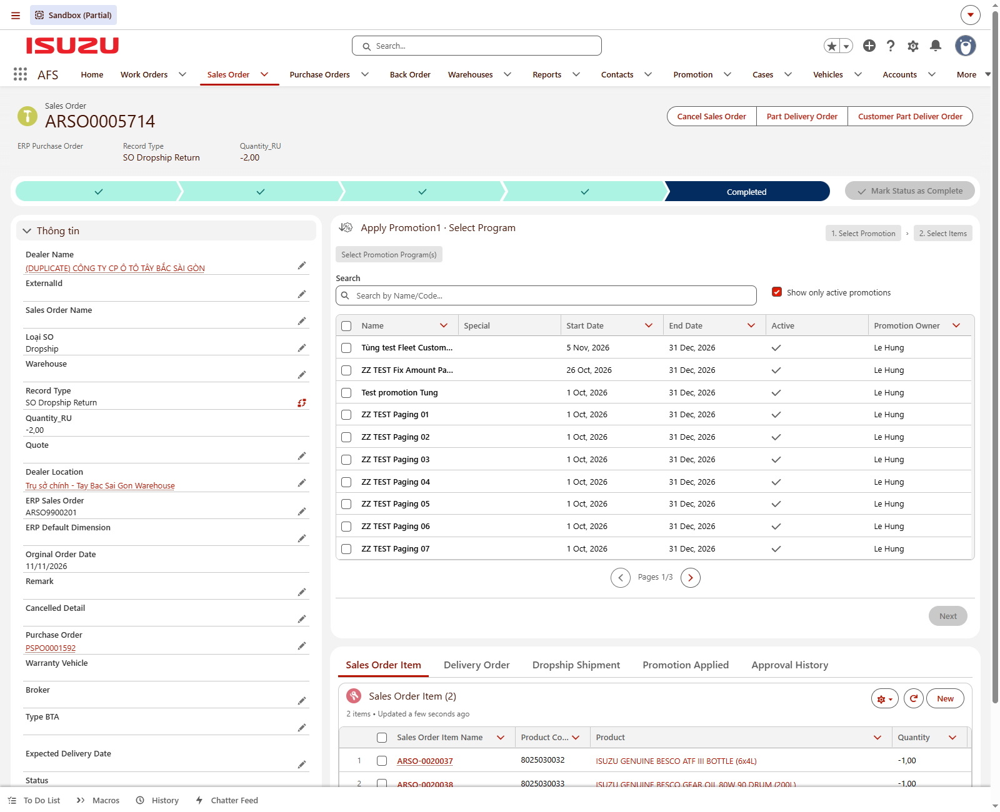
Hình 13 – TC-007: SO Return có 2 dòng Sales Order Item.
TC-008 – Post Delivery, tạo Packing Slip Journal và Post Invoice Journal
Đường dẫn: ERP
Kết quả mong đợi: (CSV không ghi) IVC Rejected 09/11: DMS tự tạo DO không có DO items, DO phải ở Draft.
Chạy lại 11/11/2026: Đạt DMS sinh Return DO ở Draft, có DO items (xem TC-009).
- SO Return đã đồng bộ về DMS và có GR.
- Trên ERP post thủ công Post Delivery, tạo Packing Slip Journal cho SO Return (ARPS9900201) và Post Invoice Journal (giả lập).
- ERP gửi hook DH-00198506 (
8_PostPacking, SO_Type = SO_Return) về DMS. Lúc này DMS chưa xác định được Shipment gốc nên vẫn sinh Return DO.
TC-009 – Tạo DO: DMS tự động sinh DO khi Post Packing Slips trên ERP
Đường dẫn: DMS → App Launcher → AFS → Sales Order
Kết quả mong đợi: DO được tạo ở trạng thái Draft và có gắn items.
Chạy lại 11/11/2026: Đạt DO-20261111-3424 (RT DO Return Dropship) ở Draft, có 2 DO items.
- Vào SO Return ARSO0005714.
- Vào tab Delivery Order.
- Kiểm tra DO vừa tạo ở trạng thái Draft (kho xuất SF_ITB_Dropship, kho nhận DLR_ITB).
- Kiểm tra trong DO đã có DO items: 8025030032 x1, 8025030033 x1.
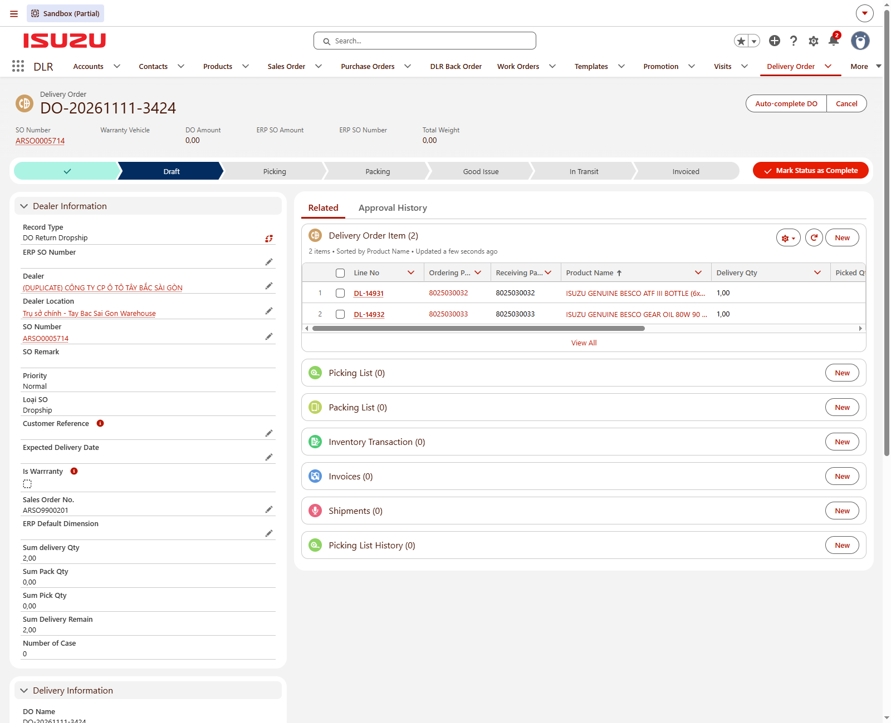
Hình 14 – TC-009: Return DO DO-20261111-3424 ở Draft và có 2 DO items.
TC-010 – Cancel SM và DO: tự động cancel SM gốc & DO ở TC-009 khi SO Return nhận được tín hiệu post invoice của đơn Return từ ERP
Đường dẫn: DMS → App Launcher → DLR → Shipments
Kết quả mong đợi: Khi post return invoice thì DMS chỉ cancel đúng 1 SM theo invoice và cancel DO.
Chạy lại 11/11/2026: Đạt chỉ SM-000418 và Return DO bị Cancelled, SM-000419 giữ nguyên.
- Đảm bảo SO Return đã đồng bộ về DMS và giao dịch gốc có SM. ERP post Invoice Journal của SO Return và gửi hook DH-00198508 (
Sync_InvoiceSO,InvoiceId= ARCN9900201,InvoiceId_Orig= ARIN9900101); Message ghi "Success: Completed Sales_Order__c … Hủy 1 Shipment gốc chưa nhập kho. Hủy Return DO: DO-20261111-3424".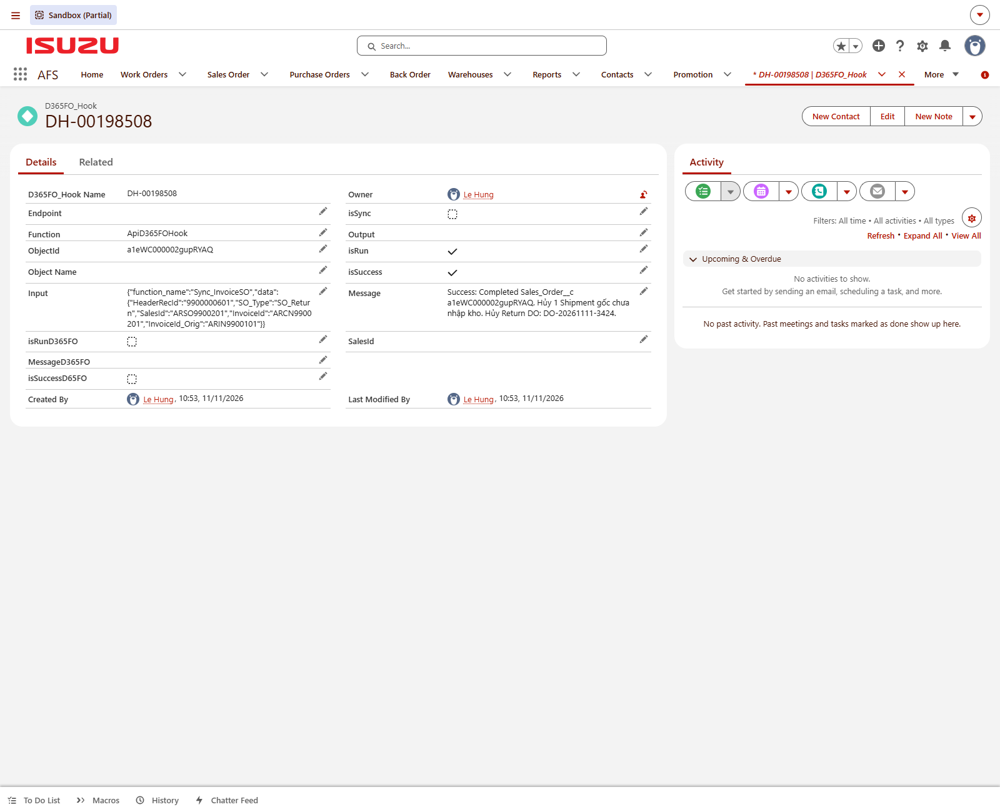
Hình 15 – TC-010: hook Sync_InvoiceSO (DH-00198508) thành công. - Mở SO Return ARSO0005714: Original Shipment trỏ về SM-000418.
- Kiểm tra Shipment đã chuyển sang Cancelled chưa: SM-000418 (hóa đơn ARIN9900101) Cancelled; SM-000419 (hóa đơn ARIN9900102) giữ nguyên Creation.
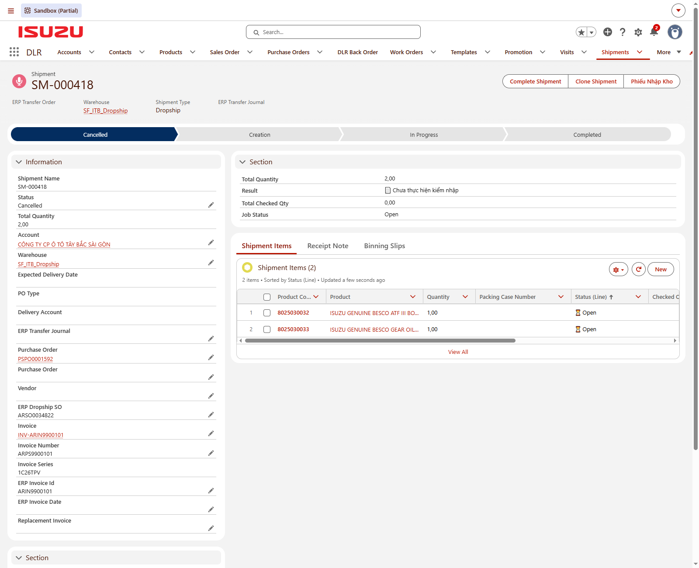
Hình 16 – TC-010: SM-000418 (hóa đơn gốc của SO Return) đã Cancelled. 
Hình 17 – TC-010: SM-000419 (hóa đơn khác) giữ nguyên Creation. - Kiểm tra DO ở SO Return đã chuyển sang Cancelled chưa: DO-20261111-3424 Cancelled.
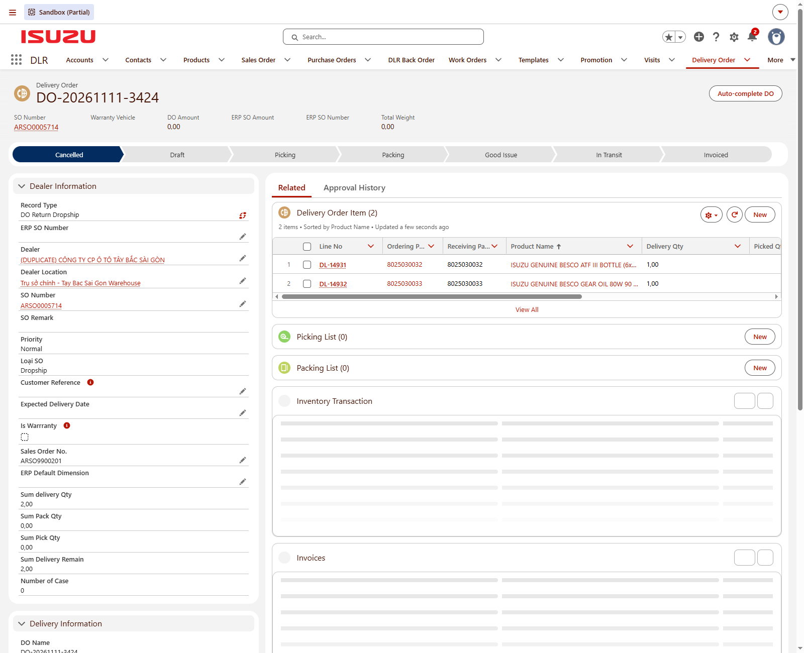
Hình 18 – TC-010: Return DO đã Cancelled.
- Ở TC-008 (ERP post packing slip của SO Return) DMS chưa xác định được Shipment gốc nên vẫn sinh Return DO (Draft).
- Ở TC-010 hook
Sync_InvoiceSOcóInvoiceId_Orig: hệ thống đối chiếu với ERP Invoice Id đã lưu trên Shipment (TC-005) để tìm Shipment gốc (chỉ đúng Shipment của hóa đơn đó) và gắn vào SO Return (field Original Shipment). - Shipment gốc chưa Completed (chưa nhập kho): Cancel Shipment gốc và Cancel Return DO. Các Shipment khác của SO giữ nguyên.
- Shipment gốc đã Completed (đã nhập kho): không Cancel Shipment gốc và Return DO; người dùng tiếp tục xử lý Return DO (Auto-complete DO hoặc Picking, Packing, Good Issue, xem mục 2).
TC-011 – Completed SO Return: tự động completed SO Return trên DMS khi Post Invoice Journal trên ERP
Đường dẫn: DMS → App Launcher → AFS → Sales Orders
Kết quả mong đợi: SO Return trên DMS được chuyển sang Complete.
Chạy lại 11/11/2026: Đạt ARSO0005714 Completed, Invoice Number ARCN9900201.
- Hoàn tất Post Invoice Journal của SO Return trên ERP (hook DH-00198508).
- Kiểm tra trạng thái SO Return đã Complete chưa: thanh trạng thái Completed, Invoice Number = ARCN9900201, Original Shipment = SM-000418.
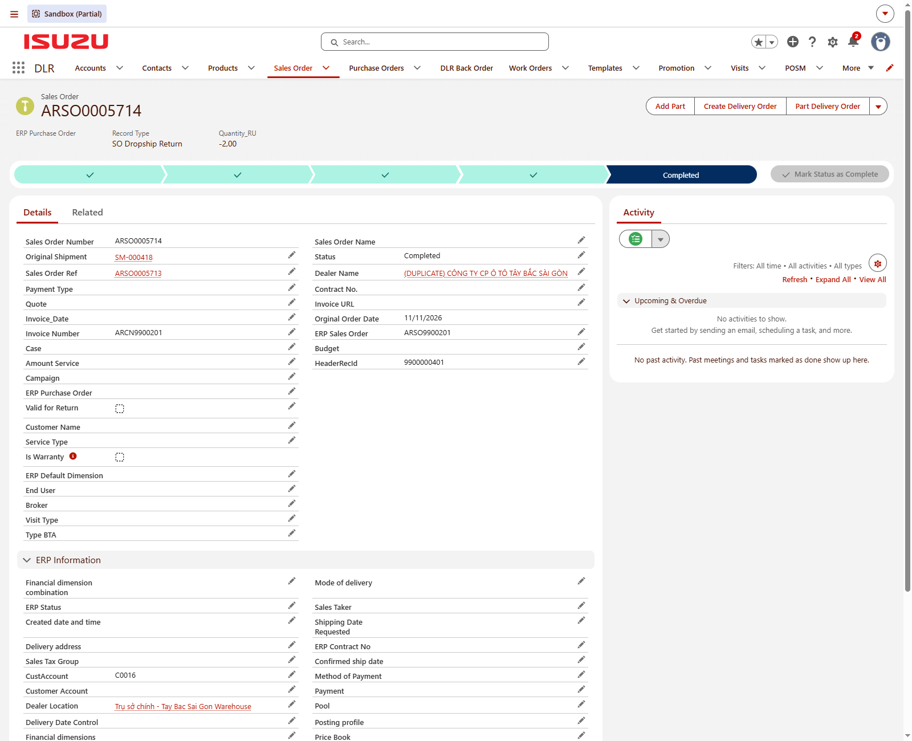
Hình 19 – TC-011: SO Return Completed.
TC-012 – Tạo SO bán bù: tạo SO bán bù từ item của DLR SO Return đã Complete
Đường dẫn: DMS → App Launcher → AFS → SO Return
Kết quả mong đợi: Hệ thống tạo thành công một SO bán bù và liên kết với DLR SO Return nguồn. SO tự động gán Pricebook để chuyển SO sang trạng thái Open thành công.
Chạy lại 11/11/2026: Đạt SO bù ARSO0005715 tự gán Standard Price Book, Open được. Quyền sửa line của SPP chưa kiểm bằng tài khoản thật.
- Mở DLR SO Return đã Complete (từ SO gốc ARSO0005713 trên AFS), chọn Create Offset SO.
- Chọn SO Return đã Complete (chỉ liệt kê SO Return cùng PO) và Shipment gốc SM-000418.
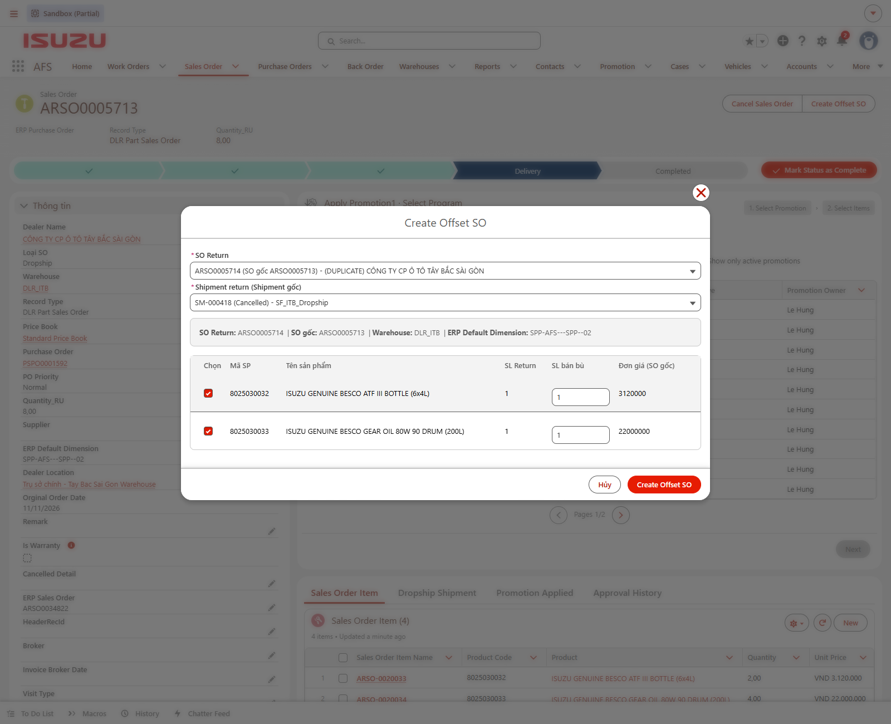
Hình 20 – TC-012: form Create Offset SO. - Chọn mã sản phẩm và số lượng bán bù (8025030032 x1, 8025030033 x1).
- Chọn Create Offset SO.
- Kiểm tra các thông tin trên SO vừa tạo: Draft, Price Book = Standard Price Book (lấy từ SO gốc), kho DLR_ITB, ERP Default Dimension SPP-AFS---SPP--02, Original Shipment SM-000418, Sales Order Ref = SO Return.
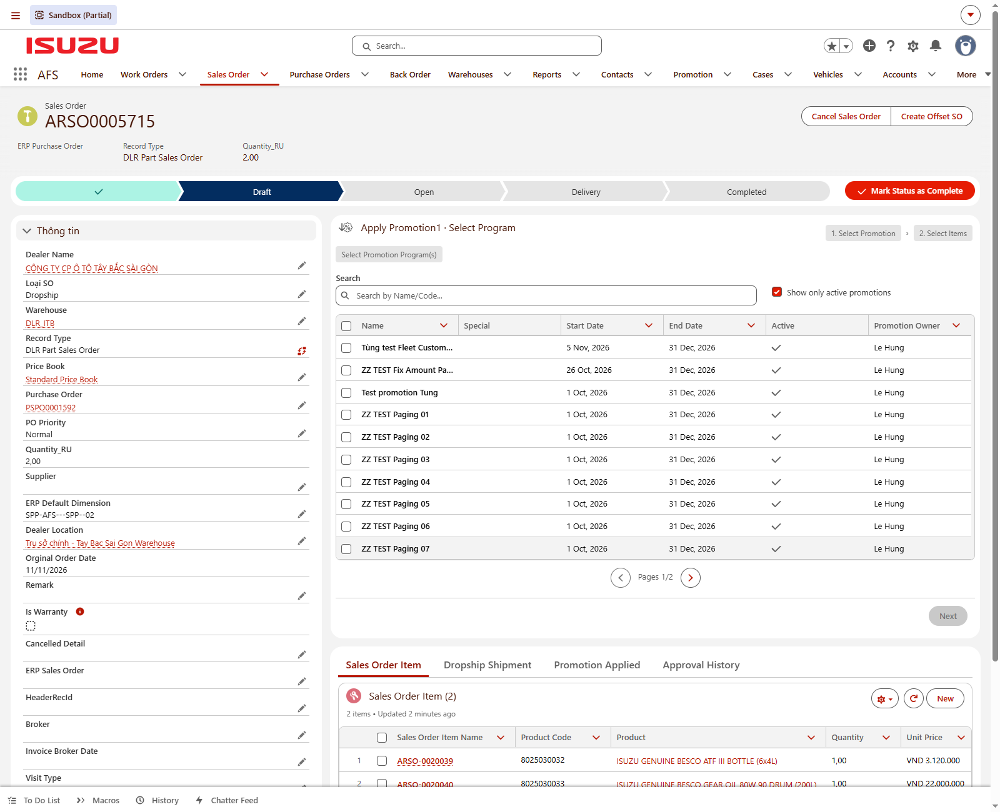
Hình 21 – TC-012: SO bù ARSO0005715 Draft, đã có Price Book. - Chuyển SO sang trạng thái Open: thành công, DMS gửi ERP hook DH-00198512 (
CreateSO, Lines=2).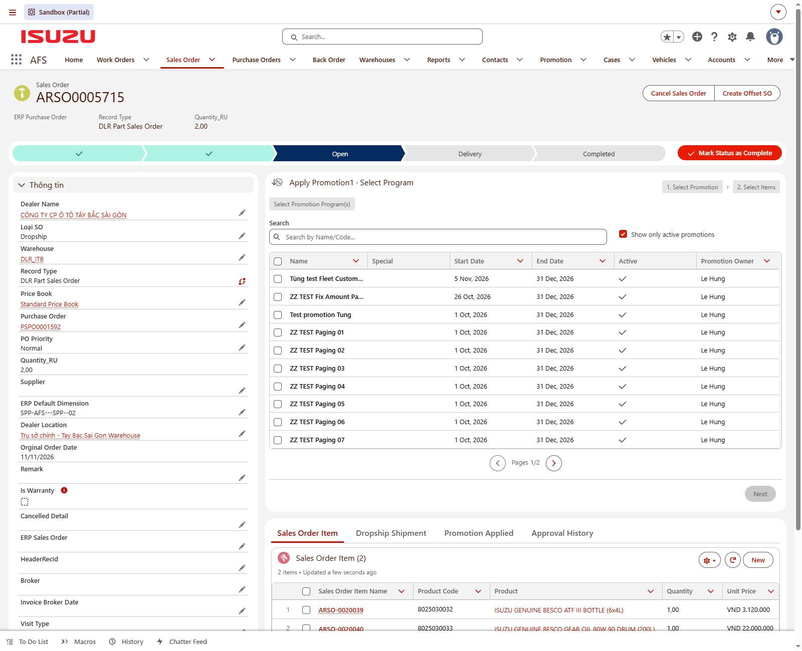
Hình 22 – TC-012: SO bù chuyển Open. - Thực hiện như đơn SO bình thường. Người dùng SPP (role
IVC_PBO_Staff_Dealer_part_operation) được sharing rule quyền Edit để sửa/thêm line SO Item.
Phần chưa làm
- Kịch bản 2 vendor (TC-001-02, 002-02, 003-02) chưa chạy lại.
- Quyền sửa line SO bù của SPP (role
IVC_PBO_Staff_Dealer_part_operation) chưa kiểm bằng tài khoản thật vì Partial chưa có user active thuộc role này. - Tự hủy GR của Shipment gốc khi có SO Return (GR vẫn Draft).
- Ngày post invoice: hook ERP chưa gửi ngày hóa đơn nên Invoice_Date của SO Return còn trống.
- Nhánh "Shipment gốc đã Completed" (giữ Shipment và Return DO) mới có test tự động, chưa chạy ở giao diện.
2. Luồng DLR Stock (Đại lý đã nhập kho)
2.1. Tổng quan, badge và điều kiện đầu vào
Áp dụng khi hàng Dropship đã được Đại lý nhập kho (đã có tồn kho tại Đại lý) và cần trả hàng. Khác với luồng Non-Stock (mục 1, TC-007 đến TC-011, hệ thống tự hủy Shipment gốc), ở luồng này Đại lý tự xuất kho trả hàng trên DMS: tạo Part Delivery Order (DO) từ SO Return, đi qua Picking, Packing, Good Issue, rồi tạo SO bán bù. Các bước đánh số tiếp theo quy trình (Bước 11 → 14); riêng Bước 12 được tách thành 12.1, 12.2, 12.3 theo đúng các màn hình thao tác trên DMS. Ảnh chụp từ môi trường Partial ngày 30/10/2026.
- Kho xuất (Issuing Warehouse) = kho nhập hàng của Đại lý theo Shipment gốc (ví dụ
SF_ITB), kể cả khi hàng còn nằm ở location Temp/Waiting. - Kho nhận (Receiving Warehouse) = kho của IVC trên SO gốc (ví dụ
DLR_ITB). - Không đồng bộ ERP: DMS không gửi hook
CreateDOPartcho DO này (ERP đã tự xuất kho cho SO Return). - Không tạo Shipment nhập kho khi DO chuyển In Transit / Invoiced.
- Số lượng dòng DO luôn dương, có đủ Ordering Part / Receiving Part Code; DMS tự trừ tồn kho khi Parts Issue Note Completed (xem mục 2.6).
Sơ đồ toàn luồng DLR Stock (Bước 1 → 14)
Phần A – Luồng Dropship thuận, đến khi Đại lý nhập kho (Bước 1 → 7.2)
| ERP | 3. Create SO DropshipERP tạo SO Dropship từ dữ liệu DMS gửi lên | 4. Create PO DropshipDùng chức năng Direct Delivery trên SO | 5. Post GR POPost GR cho PO Dropship | 6. Auto DeliverySO Dropship tự Delivery, tạo Packing Slip Journal ➔ hook 8_PostPacking |
7. Post Invoice Journal SOKế toán post invoice ➔ hook 9_PostInvoice |
|||
|---|---|---|---|---|---|---|---|---|
| DMS | 1. PO.DLRĐại lý lên đơn đặt hàng PO loại Dropship | 2. SO by vendor IVCPO được duyệt: tự tạo SO theo nhà cung cấp (tham chiếu PO), sync lên ERP ➔ hook CreateSO |
7.1, 7.2Shipment của Đại lý (đã có thông tin invoice) và GR ở trạng thái Draft |
Nhập kho DLRĐại lý nhập kho: GR Completed, hàng nằm ở kho/location của Đại lý |
Phần B – Return và xuất kho trả hàng (Bước 8 → 14, Bước 10 không dùng trong luồng này)
| ERP | 8. Create SO ReturnTạo SO Return, tham chiếu Packing Slip Journal gốc, chuyển Confirmed➔ hook SO_Return |
9. Post DeliveryPost Delivery và tạo Packing Slip Journal cho SO Return ➔ hook 8_PostPacking |
13. ERP xuất khoERP ghi nhận xuất kho của DO, gửi tồn kho về DMS ➔ hook InventSum |
|||||
|---|---|---|---|---|---|---|---|---|
| DMS | 8.1. Tự tạo SO ReturnSO Return RT SO Dropship Return, Open, trỏ về SO gốc |
9. Nhận hook, xử lý DOChưa có Part DO: tạo Return DO (Part DO, qty dương, đủ Part Code). Đã có Part DO (Bước 11): chỉ chuyển DO ➔ In Transit |
11. Tạo Part DODLR kiểm tồn kho, bấm Part Delivery Order trên SO Return. DO ở Draft; SO Return ➔ Delivery |
12.1. PickingMark Complete ➔ New Picking List ➔ Picking PC ➔ Complete Picking. DO ➔ Packing |
12.2. PackingCreate Packing List ➔ Case Number ➔ Scan ➔ Complete Packing. DO ➔ Good Issue |
12.3. Good IssueCreate Goods Issue ➔ Parts Issue Note CompletedTự động: SO Return ➔ Completed |
13. Tồn kho giảmChờ data sync: QoH của kho DLR giảm đúng số lượng đã xuất | 14. Tạo SO bán bùTừ SO Return Completed, nút Create Offset SO. SO mới Draft (bấm Open để tạo ở ERP), Sales Order Ref ➔ SO Return, Original Shipment ➔ Shipment gốc |
Tự động Hệ thống DMS tự chạy, người dùng chỉ kiểm tra kết quả.
Chờ webhook ERP Bước chỉ chạy khi ERP gọi hook về DMS (webhook). Người dùng DMS không bấm được, phải chờ ERP gửi rồi kiểm tra kết quả ở D365FO_Hook.
Chờ data sync Bước chỉ có kết quả sau khi dữ liệu từ ERP đồng bộ về DMS (ví dụ tồn kho). Chưa đồng bộ thì màn hình DMS chưa đổi, đây không phải lỗi thao tác.
SO_Return (DH-00188565) được chèn thủ công đúng như ERP gửi, phần xử lý phía DMS chạy thật. Đại lý C0001 – CÔNG TY TNHH KINH DOANH ÔTÔ NISU; SO gốc ARSO0004685 (ERP: ARSO0034754); SO Return test ARSO0004993 (ERP: ARSO-TEST-STOCK02); sản phẩm trả 8200407188 – BẦU HOÁN NHIỆT T1400, số lượng 2; kho xuất DLR_INS, tồn kho ban đầu 10.
Điều kiện đầu vào: SO Return đã có trên DMS Chờ webhook ERP
SO Return được ERP gửi về qua hook SO_Return (TC-007 ở mục 1, xem Hình 11 và Hình 12). Người dùng DMS không tạo SO Return bằng tay. Hook xử lý thành công thì SO Return xuất hiện ở trạng thái Open, Record Type SO Dropship Return, Sales Order Ref trỏ về SO gốc, số lượng âm. Chưa có SO Return thì không làm tiếp được các bước dưới.
2.2. Bước 11 – Kiểm tra tồn kho và tạo Part Delivery Order từ SO Return DLR · Thủ công
- Bước 11.a Ghi nhận tồn kho trước khi xuất: vào App Launcher → Warehouse → kho DLR_INS → mục Warehouse Inventories → mở dòng sản phẩm
8200407188. Tồn kho (QoH) hiện tại là 10.
Hình 24 – Bước 11.a: Warehouse Inventory WHN-192701 (kho DLR_INS, sản phẩm 8200407188), QoH = 10. - Bước 11.b Mở SO Return ARSO0004993, nhấn button "Part Delivery Order" trên thanh thao tác. Cửa sổ Create Delivery Order hiện ra, ô Warehouse mặc định là
IACnên Available Physical Qty = 0 và Delivery Qty = 0.
Hình 25 – Bước 11.b: cửa sổ Create Delivery Order, Warehouse mặc định IAC. - Bước 11.c Đổi Warehouse sang DLR_INS, bấm nút Save nhỏ cạnh ô Warehouse để nạp tồn kho của kho này. Dòng sản phẩm
8200407188hiển thị Order Qty = 2, Available Physical Qty = 10, Delivery Qty = 2.
Hình 26 – Bước 11.c: sau khi chọn DLR_INS và bấm Save nhỏ, Available Physical Qty = 10, Delivery Qty = 2. - Bước 11.d Bấm Save ở cuối cửa sổ. Hệ thống tạo Delivery Order và quay lại SO Return; trạng thái SO Return chuyển sang Delivery.

Hình 27 – Bước 11.d: SO Return ARSO0004993 ở trạng thái Delivery sau khi tạo DO. - Bước 11.e Mở DO vừa tạo (DO-20261030-2158): DO-20261030-2158, Record Type DO Return Dropship (DO tạo từ SO Return), trạng thái Draft, kho xuất DLR_INS, Receiving Warehouse = kho IVC của SO gốc; mục Delivery Order Item có sản phẩm
8200407188, Delivery Qty = 2.
Hình 28 – Bước 11.e: DO-20261030-2158 ở trạng thái Draft.
2.3. Bước 12.1 – Picking (lấy hàng) DLR · Thủ công
Tại DO, thanh trạng thái (Path) đi theo thứ tự Draft → Picking → Packing → Good Issue → In Transit → Invoiced. Phải làm đủ từng bước, không chọn nhảy thẳng sang Invoiced trên Path, vì bỏ qua Picking và Packing thì sẽ không có Goods Issue và không có số lượng đã lấy.
- Bước 12.1.a Ở DO, nhấn Mark Status as Complete để chuyển Draft → Picking. Trên DO xuất hiện button New Picking List.

Hình 29 – Bước 12.1.a: DO ở bước Picking, có button New Picking List. - Bước 12.1.b Nhấn New Picking List. Tích chọn dòng sản phẩm
8200407188(Qty 2, vị trí kho INS) rồi nhấn Next.
Hình 30 – Bước 12.1.b: chọn dòng sản phẩm cần lấy. - Bước 12.1.c Chọn Device (bắt buộc; là số thứ tự bàn/thiết bị lấy hàng, ví dụ
1), có thể nhập Creator's Name, rồi nhấn Save. Hệ thống tạo Picking List PICK-0350 ở trạng thái Open.
Hình 31 – Bước 12.1.c: chọn Device rồi Save để tạo Picking List. - Bước 12.1.d Mở Picking List, nhấn Picking PC. Cột Picked Qty mặc định bằng số cần lấy (2), từ vị trí INS. Nhấn Save → Xác nhận. Sau đó Total Picking Quantity = 2 (đồng thời DO Item có Picked Quantity = 2).

Hình 32 – Bước 12.1.d: màn hình Picking PC, Picked Qty = 2. 
Hình 33 – Bước 12.1.d: PICK-0350 có Total Picking Quantity = 2, trạng thái vẫn Open. - Bước 12.1.e Nhấn Complete Picking → Save. Picking List chuyển Complete.

Hình 34 – Bước 12.1.e: PICK-0350 đã Complete. - Bước 12.1.f Quay lại DO, nhấn Mark Status as Complete để chuyển Picking → Packing. Button Create Packing List xuất hiện.

Hình 35 – Bước 12.1.f: DO ở bước Packing, có button Create Packing List.
2.4. Bước 12.2 – Packing (đóng gói) DLR · Thủ công
- Bước 12.2.a Ở DO (bước Packing), nhấn Create Packing List, chọn Device (ví dụ
1) rồi Save. Hệ thống tạo Packing List PACK-00256 ở trạng thái Open.
Hình 36 – Bước 12.2.a: chọn Device để tạo Packing List. - Bước 12.2.b Ở Packing List nhấn Create Case Number (thùng hàng): chọn Auto Generate, Số Lượng Cần Tạo = 1, nhập Packing User, Save. Total Cases = 1 và hệ thống sinh mã thùng, ví dụ
DLR_INS-20261030-00033.
Hình 37 – Bước 12.2.b: Packing List có Total Cases = 1, Packing User đã nhập. - Bước 12.2.c Nhấn Scan. Nhập mã thùng vào Case No. rồi Enter (thông báo "Đã nhận Case mới"), sau đó nhập
8200407188vào Part No. rồi Enter. Dòng sản phẩm hiện ra với Packed Quantity mặc định 1; sửa thành 2.
Hình 38 – Bước 12.2.c: thùng DLR_INS-20261030-00033 đã nhận, dòng 8200407188 chờ nhập Packed Quantity. - Bước 12.2.d Nhấn Save. Thông báo "Thành công – Đã lưu Packing List Items", Packed Quantity = 2.

Hình 39 – Bước 12.2.d: đã lưu Packing List Items, Packed Quantity = 2. - Bước 12.2.e Ở Packing List mở menu ▼ cạnh các button, chọn Complete Packing, xác nhận Save. Packing List chuyển Complete (Total Packed Quantity = 2).

Hình 40 – Bước 12.2.e: chọn Complete Packing trong menu. 
Hình 41 – Bước 12.2.e: xác nhận hoàn thành đóng gói. Ảnh bổ sung sau: Hình 42 – Packing List PACK-00256 ở trạng thái CompleteHình 42 – Bước 12.2.e: PACK-00256 đã Complete.
2.5. Bước 12.3 – Good Issue và SO Return tự Completed DLR · Thủ công Tự động
- Bước 12.3.a Quay lại DO, nhấn Mark Status as Complete để chuyển Packing → Good Issue. Trên DO xuất hiện button Create Goods Issue. Tự động Khi DO đạt Good Issue, hệ thống tự chuyển SO Return sang Completed (trigger
completeSORDropshipReturnWhenDODelivered; cũng áp dụng khi DO đạt Invoiced hoặc Delivered).
Hình 43 – Bước 12.3.a: DO ở bước Good Issue, có button Create Goods Issue. - Bước 12.3.b Nhấn Create Goods Issue → xác nhận Save. Hệ thống tạo phiếu xuất kho Parts Issue Note GIP-20261030-00001 ở trạng thái Completed, tổng số lượng 2.

Hình 44 – Bước 12.3.b: xác nhận tạo Goods Issue. Ảnh bổ sung sau: Hình 45 – Parts Issue Note GIP-20261030-00001, Status = Completed, qty = 2Hình 45 – Bước 12.3.b: phiếu Goods Issue GIP-20261030-00001 đã Completed. - Bước 12.3.c Mở lại SO Return ARSO0004993: thanh trạng thái đã Completed (button Mark Status as Complete chuyển xám). Menu ▼ có action Create Offset SO (dùng ở Bước 14).

Hình 46 – Bước 12.3.c: SO Return Completed, menu hiển thị Create SO bán bù.
2.6. Bước 13 – Xác nhận tồn kho Đại lý đã giảm Chờ data sync
SF_ITB_Temp giảm 100 → 0. Đây là khác biệt so với Dealer Parts DO (DMS không tự trừ, chỉ đổi khi ERP gửi hook InventSum). Số liệu từ ERP gửi về qua InventSum vẫn là nguồn đối chiếu cuối cùng; nếu ERP chưa ghi nhận xuất kho thì chưa có hook cho item/kho này.
- Bước 13.a Chờ data sync Tồn kho DMS đã giảm ngay khi Goods Issue Completed (xem callout trên). Phần còn lại là chờ ERP ghi nhận xuất kho và đẩy tồn kho về DMS để đối chiếu.
- Bước 13.b Kiểm tra hook tồn kho: mở D365FO_Hook mới nhất có Function = InventSum của item
8200407188, khoDLR_INS(trong Input:InventLocationId= DLR_INS,ItemId= 8200407188,AvailPhysical= 8). isRun và isSuccess được tích, Message ghi "D365FO InventSum temp Created/Updated Successfully". Hook InventSum của item/kho khác (ví dụ DLR_ITB) không phải kết quả của DO này. - Bước 13.c Vào lại Warehouse → DLR_INS → Warehouse Inventories, mở sản phẩm
8200407188: tồn kho (QoH) giảm từ 10 xuống 8 (đúng 2 cái xuất trả).Ảnh bổ sung sau: Hình 47 – Tồn kho DLR_INS sau khi ERP đồng bộ (kỳ vọng QoH = 8). Hiện tại, chưa đồng bộ, vẫn QoH = 10.Hình 47 – Bước 13.c: tồn kho kho DLR_INS sau khi data sync về.
InventSum sau khi Goods Issue đều trả về rỗng ("Success but no new data") vì ERP chưa có thay đổi tồn nào của item này. Cần người dùng ERP ghi nhận xuất kho cho SO Return thì mới có dữ liệu đối chiếu.
2.7. Bước 14 – Create Offset SO (SO bán bù) từ SO Return đã Completed DLR · Thủ công
Chỉ phụ thuộc SO Return đã Completed (Bước 12.3), không phải chờ tồn kho đồng bộ ở Bước 13. Nút Create Offset SO có trên trang SO của AFS (và trên SO Return); người dùng chọn SO Return và Shipment return (Shipment gốc) rồi tạo SO bán bù.
- Bước 14.a Mở SO (SO Return đã Completed hoặc SO bất kỳ trên giao diện AFS), mở thanh thao tác hoặc menu ▼, chọn Create Offset SO. Cửa sổ hiển thị:
- SO Return: chỉ liệt kê SO Dropship Return đã Completed và cùng Purchase Order với SO đang mở nút (mở từ SO Return thì lấy PO của chính nó và chọn sẵn). SO chưa có PO, hoặc PO chưa có SO Return Completed, thì form báo không có SO Return nào.
- Shipment return (Shipment gốc): các Shipment của SO gốc, kể cả Shipment đã Cancelled (ví dụ
SM-000399 (Cancelled) - SF_ITB); Shipment đã gắn với Return DO của SO Return được chọn sẵn. - Khung thông tin: SO Return, SO gốc, Warehouse và ERP Default Dimension của SO gốc.
- Bảng sản phẩm: mã SP, SL Return (số dương), SL bán bù (mặc định bằng SL Return, tối đa SL Return), Đơn giá (SO gốc).

Hình 48 – Bước 14.a: cửa sổ Create Offset SO (SO Return ARSO0004996, Shipment gốc SM-000399, đơn giá lấy theo SO gốc). - Bước 14.b Chọn sản phẩm cần bán bù, chỉnh SL bán bù nếu cần, nhấn Create Offset SO. Hệ thống tạo Sales Order mới và chuyển sang trang SO đó.
- Bước 14.c Kiểm tra SO mới (ví dụ ARSO0005008): Record Type DLR Part Sales Order, trạng thái Draft (chưa có trên ERP); Warehouse và ERP Default Dimension giống SO gốc; Đại lý, Purchase Order lấy theo SO gốc; Sales Order Ref trỏ về SO Return; Original Shipment trỏ về Shipment gốc; dòng item có số lượng dương, đơn giá, thuế (VAT), thành tiền giống dòng SO gốc (thành tiền quy đổi theo SL bán bù; Discount Amount tính trên mỗi đơn vị nên giữ nguyên, không quy đổi).
Ảnh bổ sung sau: Hình 49 – SO bán bù ARSO0005008 (Draft, Warehouse DLR_ITB, Original Shipment SM-000399, đơn giá 6.939.000)
Hình 49 – Bước 14.c: Offset SO ARSO0005008 vừa tạo. - Bước 14.d Kiểm tra xong, bấm Open trên SO bán bù: lúc này SO mới được tạo ở ERP (hook
CreateSO). Từ đó xử lý SO như SO thông thường.
2.8. Auto-complete DO (làm nhanh Bước 12.1 → 12.3) DLR · Thủ công
Thay vì đi từng bước Picking, Packing, Good Issue, người dùng có thể bấm Auto-complete DO trên DO. Nút này hoạt động với DO Return Dropship (và Customer Part DO), khi DO đang ở Draft hoặc Good Issue (DO do ERP hook 8_PostPacking tạo thường đã ở Good Issue).
- Auto.a Mở DO trả hàng (ví dụ DO-20261030-2159), kiểm tra Record Type DO Return Dropship, kho xuất và kho nhận đúng (Issuing = kho Đại lý, Receiving = kho IVC).
- Auto.b Nhấn Auto-complete DO. Hệ thống tự: tạo Picking List (lấy hàng từ location có tồn, kể cả location Waiting/Temp của Đại lý) và hoàn tất; tạo và hoàn tất Parts Issue Note; trừ tồn kho location đã lấy; đưa DO về Good Issue; SO Return tự Completed.
- Auto.c Kiểm tra kết quả ở tab Related của DO: Picking List (ví dụ PICK-0357, Complete) và Parts Issue Note (ví dụ GIP-20261030-00006, Completed, số lượng 100). Không có Packing List vì Auto-complete bỏ qua bước đóng gói (Packed Quantity để trống); đây là thiết kế của nút này.
2.9. Kết quả test luồng DLR Stock (Partial)
| Bước | Kiểm tra | Kết quả | Ghi chú |
|---|---|---|---|
| Đầu vào | SO Return được ERP gửi qua hook SO_Return | Đạt (hook chèn thủ công) | DH-00188565: ARSO0004993, Open. Chờ webhook ERP khi chạy thật. |
| 11.a | Tồn kho DLR_INS trước xuất | Đạt | QoH = 10 |
| 11.b–11.e | Tạo DO từ SO Return | Đạt | DO-20261030-2158, Draft, kho DLR_INS, SL 2; SO Return sang Delivery |
| 11, 8 | Return DO có RT DO Return Dropship, kho xuất / kho nhận đúng | Đạt | DO-20261030-2159: Issuing = SF_ITB, Receiving = DLR_ITB (chạy lại hook 8_PostPacking) |
| 11 | DO Return Dropship không sync ERP, không tạo Shipment nhập kho | Đạt | Test tự động xác nhận không sinh hook CreateDOPart |
| 12.1 | Picking | Đạt | PICK-0350 Complete, Picked Qty = 2 |
| 12.2 | Packing | Đạt | PACK-00256 Complete, 1 thùng, Packed Qty = 2 |
| 12.3 | Good Issue, SO Return tự Completed | Đạt | DO Good Issue; GIP-20261030-00001 Completed (qty 2); ARSO0004993 Completed |
| Auto | Auto-complete DO cho DO Return Dropship (Draft và Good Issue) | Đạt | PICK-0357 Complete, GIP-20261030-00006 Completed (100); không có Packing List; test tự động xác nhận tồn location giảm |
| 13 | Tồn kho DLR_INS giảm 10 → 8 | Chờ data sync | DMS trừ tồn kho khi Goods Issue Completed của DO Return Dropship; ERP chưa gửi InventSum cho item này nên chưa xác nhận được QoH giảm. |
| 14 | Create Offset SO | Đạt | ARSO0005008: Draft, Warehouse DLR_ITB, ERP Default Dimension SPP-AFS---SPP--02, Original Shipment SM-000399, đơn giá 6.939.000, VAT08, thành tiền 693.900.000 giống SO gốc |
| 10.e | ERP gửi lặp Sync_InvoiceSO khi SO đã Completed | Đạt | Hook gửi lặp báo Skipped, SO không đổi (hook DH-00198521) |